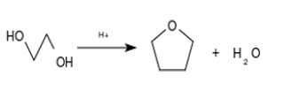

THF dapat disintesis dari hidrogenasi katalitik furan.
Proses pembuatan THF dalam industri menggunakan dehidrasi 1,4-butanadiol dengan katalis asam. Du Pont mengembangkan proses produksi THF dengan mengoksidasi n-butana menjadi maleat anhidrida kasar, diikuti dengan hidrogenasi maleat anhidrida menjadi THF

THF cenderung membentuk peroksida jika disimpan dalam udara. Oleh karena itu THF tidak boleh didistilasi sampai kering, yang dapat meninggalkan residu peroksida yang mudah meledak. THF komersial sering memakai BHT untuk mencegah pembentukan peroksida.